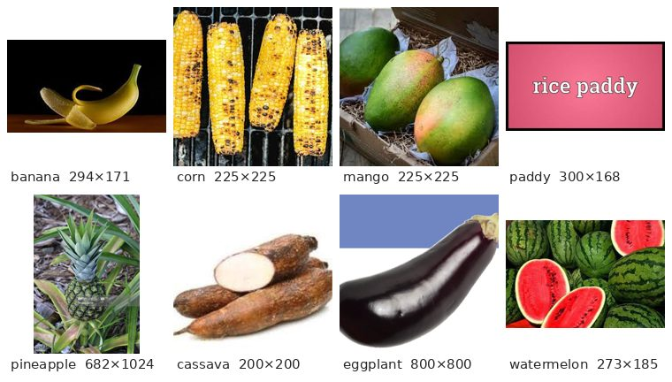
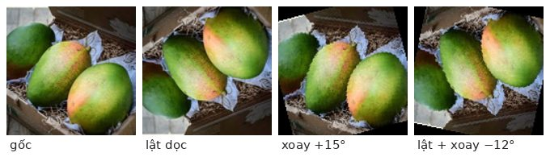

Data pipeline: Dataset, transforms, augmentation
Dữ liệu thật không gọn gàng như MNIST: ảnh đủ kích cỡ, đủ chất lượng, nằm rải rác trong thư mục. Chương này xây một “dây chuyền” đưa 3 000 ảnh của 30 loại cây trồng vào mô hình. Đây là kỹ năng bạn sẽ dùng trong mọi dự án ảnh thực tế.
Dữ liệu thật trông như thế nào?
Bộ Plants Classification (Kaggle) có 30 loại: lô hội, chuối, ngô, xoài, lúa, dứa, sắn, cà tím, dưa hấu… Lab dùng 3 000 ảnh, mỗi loại 100 ảnh.
plants_dataset/
├── classname.txt # 30 tên lớp, mỗi dòng một tên — dòng thứ i ứng với nhãn i
├── df_labels.csv # image:FILE, category → "aloevera/aloevera700.jpg", 0
├── aloevera/ *.jpg
├── banana/ *.jpg
└── …
Dữ liệu thu thập từ internet luôn có ảnh rác: logo, chữ, ảnh minh hoạ, watermark. Trước khi huấn luyện, hãy xem tận mắt vài chục ảnh mỗi lớp. Theo kinh nghiệm của Andrew Ng, dọn dữ liệu thường mang lại nhiều cải thiện hơn đổi mô hình (cách tiếp cận data-centric AI, chương 11).
1. Lớp Dataset tự viết
PyTorch chỉ yêu cầu một Dataset trả lời được hai câu hỏi: có bao nhiêu mẫu? (__len__) và mẫu thứ i là gì? (__getitem__). Ảnh chỉ được đọc từ đĩa khi cần, nhờ vậy 30 000 ảnh cũng không làm tràn bộ nhớ.
from torch.utils.data import Dataset
from PIL import Image
import pandas as pd
class PlantsDataset(Dataset):
def __init__(self, root_dir, transform=None):
self.root_dir = root_dir
self.transform = transform
self.df_info = pd.read_csv(root_dir + "/df_labels.csv")
self.labels = list(self.df_info["category"])
with open(root_dir + "/classname.txt") as f:
self.class_names = f.read().splitlines()
def __len__(self):
return len(self.labels) # 3000
def __getitem__(self, idx):
path = self.root_dir + "/" + self.df_info.iloc[idx]["image:FILE"]
with Image.open(path) as img:
image = img.convert("RGB") # ép mọi ảnh về 3 kênh màu
if self.transform is not None:
image = self.transform(image)
return image, self.labels[idx]
ds = PlantsDataset("./plants_dataset")
img, label = ds[10] # (ảnh PIL, 0) → ds.class_names[0] == "aloevera"Ảnh internet có thể là ảnh xám (1 kênh), RGBA (4 kênh, có nền trong suốt) hoặc ảnh có bảng màu. Mô hình cần mọi ảnh cùng 3 kênh, nếu không lô sẽ không ghép được.
2. Tính mean và std của chính bộ dữ liệu
MNIST có sẵn mean/std (0.1307, 0.3081). Với dữ liệu riêng, bạn tự tính cho từng kênh màu R, G, B:
def get_mean_std(dataset):
pre = transforms.Compose([transforms.Resize((128, 128)), transforms.ToTensor()])
total, s = 0, torch.zeros(3)
for img, _ in dataset: # lượt 1: mean
px = pre(img).view(3, -1) # [3, 128·128]
s += px.sum(dim=1); total += px.size(1)
mean = s / total
sq = torch.zeros(3)
for img, _ in dataset: # lượt 2: std
px = pre(img).view(3, -1)
sq += ((px - mean.unsqueeze(1)) ** 2).sum(dim=1)
return mean, torch.sqrt(sq / total)Nếu dùng transfer learning (chương 24) với mô hình huấn luyện trên ImageNet, thường dùng luôn mean/std của ImageNet: [0.485, 0.456, 0.406], [0.229, 0.224, 0.225], vì mô hình đã quen với thang đó.
3. Transforms và data augmentation
def get_transformations(mean, std):
main_tfs = [
transforms.Resize((128, 128)), # mọi ảnh về cùng kích thước
transforms.ToTensor(), # PIL → [3, 128, 128], 0…1
transforms.Normalize(mean=mean, std=std) # chuẩn hoá từng kênh
]
augmentation_tfs = [
transforms.RandomVerticalFlip(p=0.5), # 50% lật dọc
transforms.RandomRotation(degrees=15), # xoay ngẫu nhiên ±15°
]
main_transform = transforms.Compose(main_tfs)
transform_with_augmentation = transforms.Compose(augmentation_tfs + main_tfs)
return main_transform, transform_with_augmentation
Data augmentation (tăng cường dữ liệu) tạo các biến thể hợp lý của ảnh mỗi lần nạp. Với 100 ảnh mỗi lớp, mô hình dễ học thuộc từng ảnh. Augmentation buộc nó học “xoài trông như thế nào” bất kể góc chụp. Đây là một cách chống overfitting (chương 7) mà không cần thu thêm dữ liệu.
- Ảnh cây, lá, ảnh hiển vi tế bào, ảnh vệ tinh: lật, xoay thoải mái.
- Chữ số và chữ viết: không lật (6 lật thành 9, “b” thành “d”).
- X-quang ngực: không lật trái–phải (tim nằm bên trái là thông tin chẩn đoán).
- Biển báo giao thông: không lật (rẽ trái thành rẽ phải).
4. Chia train / validation / test đúng cách
from torch.utils.data import random_split, DataLoader
class SubsetWithTransform(Dataset): # gắn transform RIÊNG cho từng phần
def __init__(self, subset, transform=None):
self.subset, self.transform = subset, transform
def __len__(self):
return len(self.subset)
def __getitem__(self, idx):
image, label = self.subset[idx]
return (self.transform(image) if self.transform else image), label
def get_dataloaders(dataset, batch_size, val_fraction, test_fraction,
main_transform, augmentation_transform):
n = len(dataset)
n_val, n_test = int(n * val_fraction), int(n * test_fraction)
n_train = n - n_val - n_test
train_ds, val_ds, test_ds = random_split(dataset, [n_train, n_val, n_test])
train_ds = SubsetWithTransform(train_ds, augmentation_transform) # CÓ augmentation
val_ds = SubsetWithTransform(val_ds, main_transform) # KHÔNG augmentation
test_ds = SubsetWithTransform(test_ds, main_transform)
return (DataLoader(train_ds, batch_size=batch_size, shuffle=True),
DataLoader(val_ds, batch_size=batch_size, shuffle=False),
DataLoader(test_ds, batch_size=batch_size, shuffle=False))
# 3000 ảnh, val 15%, test 15% → 2100 / 450 / 450; batch 32 → mỗi lô ảnh [32, 3, 128, 128]Vì sao cần SubsetWithTransform? random_split chỉ chia chỉ số, cả ba phần vẫn dùng chung Dataset gốc. Nếu gắn augmentation vào Dataset gốc thì tập validation/test cũng bị lật, xoay ngẫu nhiên, và kết quả đánh giá không ổn định, không phản ánh ảnh thật. Vì thế Dataset gốc để transform=None, rồi mỗi phần nhận transform riêng.
| Tập | Vai trò (chương 11) | Augmentation | shuffle |
|---|---|---|---|
| Train | học tham số | ✅ có | ✅ |
| Validation | chọn mô hình, siêu tham số, dừng sớm | ❌ | ❌ |
| Test | đo hiệu năng cuối cùng, dùng một lần | ❌ | ❌ |
- C1M3 Assignment — Building a Robust Data Pipeline (graded:
PlantsDataset,get_transformations,get_dataloaders)
Đi từng bước qua lab
- Khám phá thư mục: in cấu trúc, đọc
df_labels.csvvàclassname.txt. - Bài 1 —
PlantsDataset: hoàn thiện__init__(labels, class_names),__len__,__getitem__(đọc ảnh → transform → nhãn). - Xem ảnh: lưới 2×4 ảnh ngẫu nhiên kèm tên lớp; để ý kích thước, nền và chất lượng khác nhau.
- Tính mean/std theo kênh trên ảnh đã resize 128×128 (hai lượt qua dữ liệu).
- Bài 2 —
get_transformations: pipeline chính (Resize → ToTensor → Normalize) và pipeline có augmentation (VerticalFlip + Rotation đặt trước pipeline chính). - Bài 3 —
get_dataloaders:random_split70/15/15 →SubsetWithTransform→ 3DataLoader(chỉ train xáo trộn). - Kiểm tra: lấy một lô từ mỗi loader, xác nhận shape
[32, 3, 128, 128]và nhãn[32].
Một hợp tác xã ở đồng bằng sông Cửu Long muốn nông dân chụp lá lúa bằng điện thoại để biết bệnh (đạo ôn, bạc lá, khô vằn hay khỏe).
- Thu thập: kỹ sư nông nghiệp chụp và gán nhãn khoảng 300–500 ảnh mỗi bệnh, ở nhiều ruộng, nhiều giờ trong ngày, nhiều loại điện thoại.
- Tổ chức đúng như bộ Plants: mỗi bệnh một thư mục + file CSV nhãn → dùng lại
PlantsDatasetgần như nguyên văn. - Chia theo ruộng, không chia ngẫu nhiên từng ảnh: ảnh cùng một ruộng rất giống nhau; nếu vừa nằm trong train vừa nằm trong test thì accuracy sẽ ảo (rò rỉ dữ liệu, data leakage).
- Augmentation: lật, xoay, chỉnh độ sáng (
ColorJitter) để mô phỏng nắng gắt và trời âm u. - Mô hình: transfer learning (chương 24), cho accuracy tốt chỉ với vài trăm ảnh mỗi lớp.
num_workers=4: đọc và biến đổi ảnh song song trên nhiều lõi CPU, để GPU không phải chờ.pin_memory=Truekhi dùng GPU NVIDIA: chép dữ liệu sang GPU nhanh hơn.torchvision.datasets.ImageFolder("thư_mục"): nếu ảnh đã chia sẵn mỗi lớp một thư mục thì có thể không cần tự viết Dataset.random_split(..., generator=torch.Generator().manual_seed(42))để lần chạy nào cũng chia giống nhau.
Ghi nhớ
Dataset=__len__+__getitem__; đọc dữ liệu “khi cần”.- Transform chính: Resize → ToTensor → Normalize (mean/std theo kênh).
- Augmentation chỉ dùng cho tập train, và phải hợp lý với lĩnh vực.
- Chia train/val/test trước, gắn transform sau (
SubsetWithTransform); cẩn thận rò rỉ dữ liệu. - Luôn xem tận mắt dữ liệu: dữ liệu thật có nhãn nhiễu.
Tự kiểm tra
Bạn huấn luyện mô hình phát hiện lỗi mối hàn từ ảnh camera nhà máy. Augmentation nào hợp lý?
Xoay nhẹ, lật (mối hàn không có chiều trái/phải cố định), đổi độ sáng/độ tương phản (ánh sáng xưởng thay đổi), thêm nhiễu nhẹ. Tránh phép biến đổi làm mất vết lỗi, như crop quá mạnh.
Vì sao không tính mean/std trên toàn bộ 3000 ảnh mà chỉ nên tính trên tập train?
Về nguyên tắc, mọi thứ “học” từ dữ liệu (kể cả mean/std) chỉ nên lấy từ tập train để test thật sự là dữ liệu chưa thấy. Trong lab tính trên toàn bộ cho đơn giản; ảnh hưởng ở đây nhỏ, nhưng với dữ liệu bảng thì có thể gây rò rỉ đáng kể.
Một lô từ train_loader có shape gì nếu batch_size=32 và ảnh resize 128×128?
Ảnh: [32, 3, 128, 128]. Nhãn: [32].